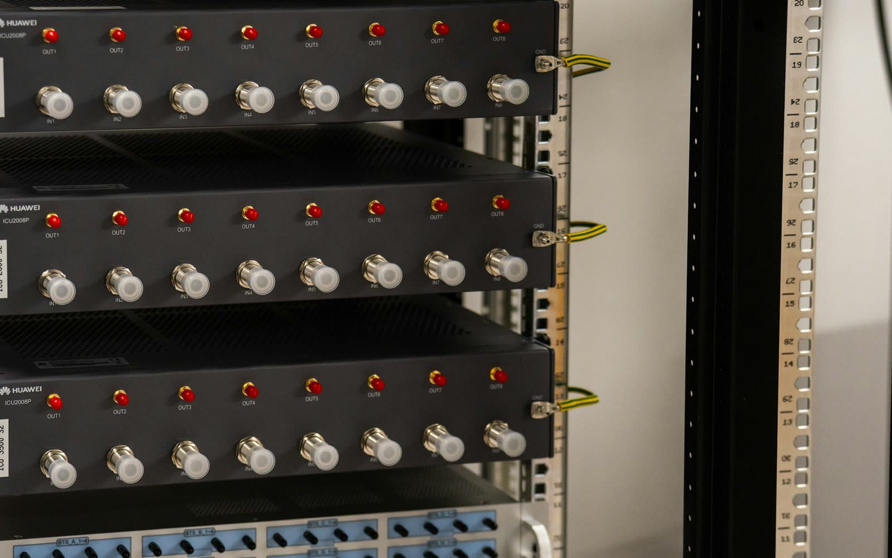
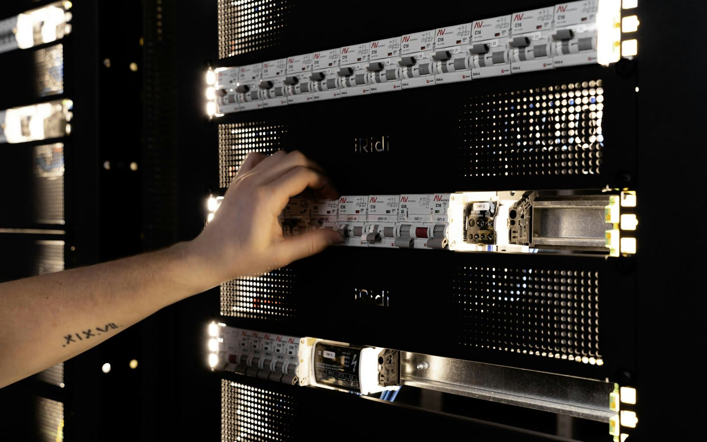
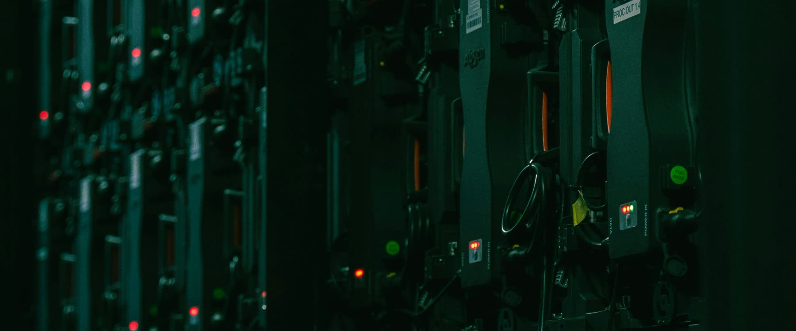

The challenge
Security teams cannot protect assets they cannot see.
Every vulnerability program depends on one basic truth: the asset list must be complete. Agents do not run on every device. Switches, patch panels, PDUs, firewalls, controllers, appliances, and out-of-band devices can be missed by traditional scanning tools.
If an asset is missing from inventory, it may also be missing from vulnerability scans, firmware tracking, patch planning, and risk reporting. A vulnerability team may believe they are working from a complete asset list while critical physical infrastructure remains outside the scope.

What RackTrack does
A physical-first view of infrastructure.
Using rack images or video, RackTrack helps identify visible devices inside the rack, including switches, servers, firewalls, routers, patch panels, PDUs, controllers, storage devices, labels, ports, and rack positions.
This physical inventory can be compared against the CMDB, vulnerability scanner scope, agent coverage, firmware records, and device ownership data. Teams move from “these are the assets our tools found” to “these are the assets physically present and in scope.”

Example scenario
Critical CVE response with fewer blind spots.
A security team receives a critical CVE affecting a specific firewall and network appliance firmware version. The scanner shows several impacted devices, but the team is unsure whether all physical appliances are included in scan scope.
With RackTrack, the site team scans the racks and quickly finds devices that were physically present but missing from scan scope — resulting in faster triage and a vulnerability response based on real infrastructure coverage.

If devices are missing from scope, risk is missing from the report.
How RackTrack works
From scan to prioritized risk.
- CaptureA technician scans or photographs the rack using a mobile device.
- DetectDevices, rack positions, labels, ports, patch panels, and PDUs are identified.
- ComparePhysical inventory is compared with CMDB, scanner scope, and agent coverage.
- Surface gapsAssets physically present but missing from security workflows are highlighted.
- PrioritizeVerified inventory improves CVE triage and remediation planning.
Security starts with visibility
A vulnerability program is only as strong as the inventory behind it. If devices are missing from scope, risk is missing from the report. RackTrack helps security and vulnerability teams bring physical infrastructure into view, close agent blind spots, and build vulnerability decisions on complete rack-level truth.